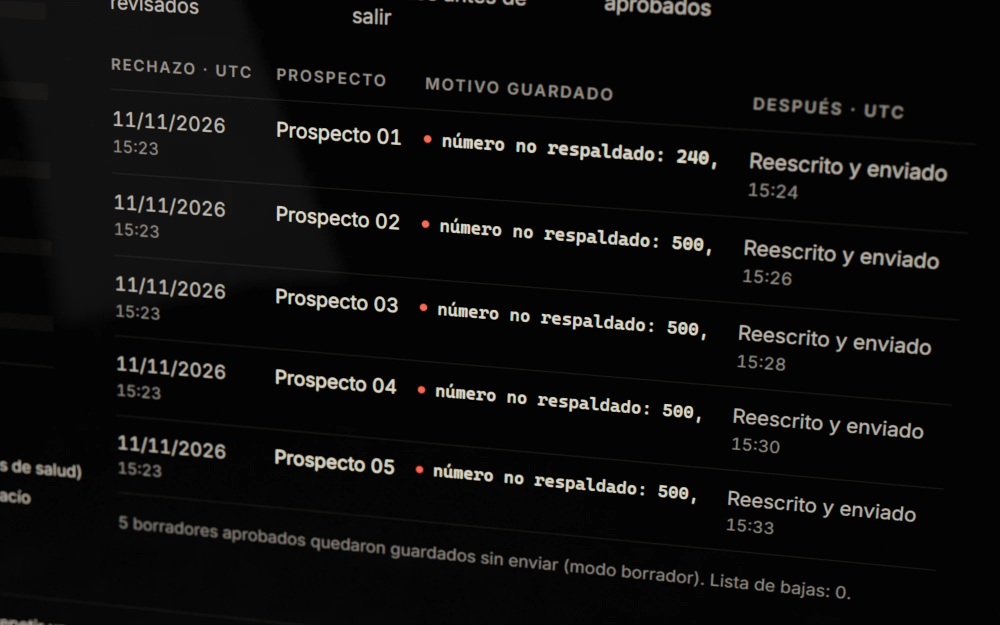
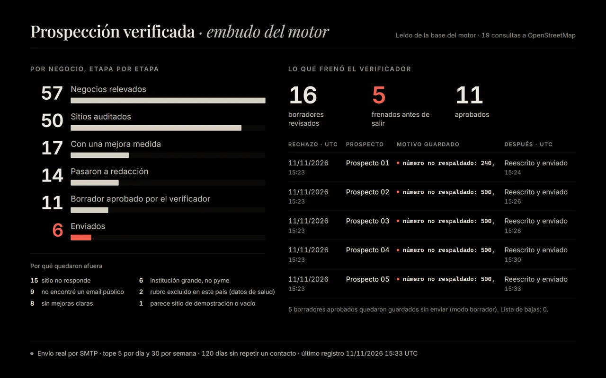
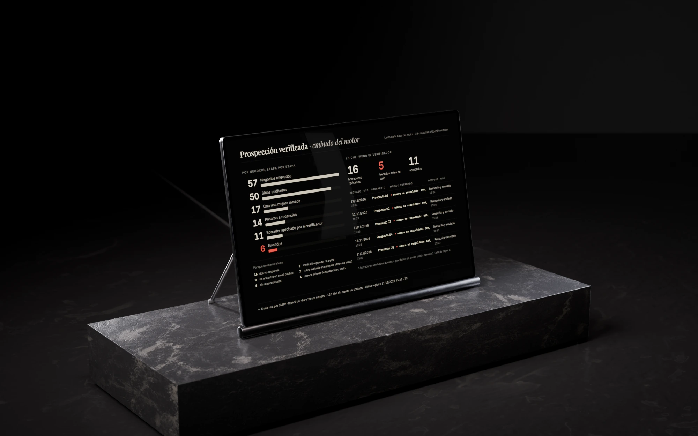

Caso de estudio
Prototipo
Prospección verificada
Un modelo de IA redacta el primer correo. Un verificador sin IA decide si sale.
- Qué es
- Un motor que encuentra pymes con sitio propio, mide qué le falta a su página y redacta un primer correo.
- Para quién
- Uso propio: escribirle a una pyme con una mejora medida en su sitio.
- Estado
- Prototipo. Al 11 de noviembre de 2026 había enviado 6 correos reales, con un tope de 5 por día.
- Mi rol
- Definí las reglas y dirigí el desarrollo
- Período
- Noviembre de 2026
- Herramientas
- Desarrollo asistido por IA · Python · SQLite · OpenStreetMap · envío por SMTP
El problema
Si un correo le dice a un negocio que su página no tiene un botón de WhatsApp, ese botón tiene que faltar de verdad.
Quise escribirle a pymes con una mejora concreta para su sitio y que el primer correo lo redactara un modelo de IA. Un modelo escribe con la misma seguridad lo que se midió y lo que no. Los correos salen sin que yo lea cada uno antes del envío, así que la regla tenía que estar en el código.
Recorrido
Un modelo de IA escribe en un solo paso. Todo lo demás es código con reglas escritas.
Fragmentos copiados del código del motor, sin cambios.
-
208 if not a["tiene_chat"] and not a["tiene_whatsapp"]:209 add("sin_whatsapp_ni_chat", 1 if a.get("gtm") else 3, "asistente",210 f"{donde_es.capitalize()} no encontré un chat ni un botón de WhatsApp para que el cliente te escriba",211 f"I didn't find a chat widget or a WhatsApp button {donde_en}")La frase sale del código, en los dos idiomas, y el modelo tiene que copiarla tal cual. Cada medición se convierte en una frase fija
El auditor revisa la página principal y hasta dos de contacto. Busca chat o WhatsApp, reservas, tienda, https, adaptación al celular, el año del pie y la descripción para buscadores. Cada falta se vuelve una frase fija.
-
20 def numeros(texto):21 return [re.sub(r"[.,](?=\d{3}\b)", "", n) for n in re.findall(r"\d[\d.,]*", texto)]⋮45 # 2) números: solo medidos, precio "desde" o cifras chicas46 permitidos = {str(b["desde_num"])}⋮51 for n in numeros(cuerpo):52 if n not in permitidos and n not in SMALL:53 m.append(f"número no respaldado: {n}")El patrón marcado en la línea 21 se queda con la coma o el punto que sigue a un número. En la corrida del 11 de noviembre, ese defecto frenó cinco borradores. Ninguna cifra sale si la auditoría no la midió
El verificador no usa IA. Compara cada borrador con la auditoría y lo frena si afirma una falta que no se midió, si usa una cifra sin respaldo o un porcentaje, si promete resultados o si propone una llamada.
Cómo lo comprobé En la corrida del 11 de noviembre hubo 16 revisiones de borradores reales: aprobó 11 y frenó 5. Los cinco eran falsos positivos, y lo cuento más abajo.
-
10 "modo_envio": "smtp",11 "pausa": false,12 "tope_diario": 5,13 "tope_semanal": 30,⋮19 "ventana_horaria_destinatario": [20 9,21 1722 ],23 "dias_sin_recontactar": 120,La configuración con la que envió el motor. Los límites de envío están escritos y el código los aplica
Hasta 5 correos por día y 30 por semana, de lunes a viernes entre las 9 y las 17 en la hora del destinatario, y 120 días antes de volver a escribirle a un mismo contacto. Con la pausa activada no sale nada.
También hace
- Sólo negocios con sitio propio Descarta redes sociales y directorios como sitio, instituciones grandes y cadenas con marca.
- Nunca dos veces el mismo negocio Cada negocio se guarda con su dominio como clave.
- Rubros excluidos En Estados Unidos no les escribe a clínicas ni a dentistas, porque manejan datos de salud.
- Se presenta y no insiste El auditor se identifica como robot, con nombre y dirección, y si un sitio lo bloquea no vuelve a intentar.
- Identificación y baja en cada correo Nombre, rol, web, dirección postal, de dónde salió la dirección de correo, aviso comercial y cómo pedir la baja, más la cabecera List-Unsubscribe.
- Lista de bajas permanente Una baja saca para siempre ese correo y su dominio, y el verificador la consulta antes de aprobar.

El embudo y el registro
Al 11 de noviembre: 57 negocios relevados, 16 revisiones y 6 correos enviados.
Por negocio, etapa por etapa, al 11 de noviembre de 2026
- 57Negocios relevados
- 50Sitios auditados
- 17Con una mejora medida
- 14Pasaron a redacción
- 11Borrador aprobado por el verificador
- 6Enviados
Lo que frenó el verificador
- 16revisiones
- 5frenados
- 11aprobados
| Negocio | Motivo guardado | Enviado |
|---|---|---|
| 01 | número no respaldado: 240, | 15:24 |
| 02 | número no respaldado: 500, | 15:26 |
| 03 | número no respaldado: 500, | 15:28 |
| 04 | número no respaldado: 500, | 15:30 |
| 05 | número no respaldado: 500, | 15:33 |
16 revisiones = 11 borradores: 5 se revisaron dos veces, después de reescribirse. De los 11 aprobados salieron 6; los otros 5 quedaron guardados porque el motor corría en modo borrador.
La traducción al inglés aparece sólo en la versión en inglés de esta página.
Cada etapa cuenta negocios distintos: uno auditado dos veces cuenta una sola vez. En la corrida del 11 de noviembre, los cinco motivos del registro tienen la misma forma: una cifra con una coma pegada. El verificador leyó «500,» o «240,» y no lo reconoció como la cifra respaldada. Los cinco borradores se reescribieron y salieron ese mismo día.

Decisiones
Qué puede afirmar un correo que nadie revisa a mano.
-
Decidí
Que un verificador sin IA, con reglas escritas, tenga la última palabra sobre cada borrador.
Lo que viLos correos salen sin que yo lea cada uno, y un modelo escribe con la misma seguridad lo medido y lo inventado.
DescartéQue otro modelo revise al primero. Una regla escrita se puede leer y auditar línea por línea.
-
Decidí
Que el motor no afirme lo que no puede medir con certeza.
Lo que viEn Windows, la comprobación de certificados de Python marca errores que no existen, y un chat cargado con Google Tag Manager no aparece en el HTML.
DescartéDecirle a un negocio que su certificado falla. Esa frase no sale nunca, y si el sitio usa Google Tag Manager, la falta de chat no alcanza por sí sola para escribirle.
-
Decidí
Que ante una cifra dudosa el verificador frene el borrador, aunque se equivoque.
Lo que viEn la corrida del 11 de noviembre frenó 5 de 16 revisiones y las cinco eran falsos positivos: leyó «500,» o «240,» con la coma pegada y no los reconoció como cifras respaldadas.
DescartéAflojar la regla para que deje pasar números parecidos. Un borrador frenado de más se reescribe; un correo con una cifra falsa ya salió. El defecto de lectura sigue sin arreglar.
Cómo lo construí
Un proceso automático, probado en modo borrador antes de enviar nada.
-
Separé lo que hace el código de lo que hace el modelo.
Un primer tramo descubre, audita y prepara. El cierre compone, verifica, envía, lee la bandeja y arma el panel. En el medio está el único paso con IA: la redacción, con instrucciones escritas.
- 01 descubrir
- 02 auditar
- 03 preparar
- 04 redactar
- 05 componer
- 06 verificar
- 07 enviar
- 08 bandeja
- 09 panel
La traducción al inglés aparece sólo en la versión en inglés de esta página.
Los pasos con el nombre que tienen en el motor. El cuarto, marcado, es el único que usa un modelo de IA. -
Modo borrador antes del envío real.
En modo borrador el motor arma el correo completo y lo guarda sin enviarlo. Así quedaron 5 borradores aprobados que nunca salieron.
-
Una vista que no muestra a nadie.
La vista del embudo sale de la base abierta sólo para lectura. El guion que la arma se niega a escribirla si encuentra un @, un dominio o cualquier nombre, ciudad o correo guardado en la base.
Resultado
Un prototipo que ya envió correos reales, con tope diario y sin resultados comerciales que contar.
57
negocios relevados en OpenStreetMap, al 11 de noviembre
16
revisiones del verificador, al 11 de noviembre
6
correos enviados al 11 de noviembre, con un tope de 5 por día
Envía de verdad, por SMTP y con la pausa desactivada. Las cifras de esta página son las de la base al 11 de noviembre de 2026; el motor siguió enviando después. Todavía no tiene resultados comerciales que contar.
Qué falta
- Arreglar la lectura de cifras: hoy una coma o un punto pegados a un número frenan el borrador entero.
- Detectar los chats que se cargan con Google Tag Manager: hoy el auditor puede no verlos y sólo le resta peso a ese hallazgo.
- Encender la medición de velocidad en celular: está apagada, así que ese hallazgo nunca aparece.
Galería
La pantalla sobre su barra de apoyo, de tres cuartos, con una varilla del caballete a la vista.

Contacto
Escribime si tenés un producto para construir o un proceso para automatizar.
Respondo en el día.